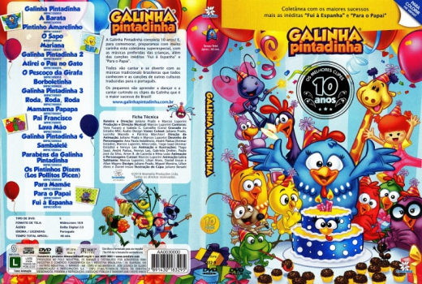

País:Brasil, 48 minutos
Idiomas falados:Português
Gênero(s):Animação, Família
Diretor(s):
Escritor(es):Darren Aronofsky
Codec:MPEG-2 (DVD)
Número: 2870


Certificado:
Sinopse:
A galinha mais amada do Brasil completa dez anos de idade e comemora seu aniversário em alto estilo com o lançamento do DVD Deluxe “Galinha Pintadinha – 10 Anos”. O trabalho é uma compilação das músicas mais cantadas pela criançada e reúne sucessos de todos seus lançamentos desde “Galinha Pintadinha – Vol.1”. Em versão deluxe, o projeto apresenta ainda duas músicas inéditas: “Para O Papai” e “Fui à Espanha”.
A Galinha Pintadinha completa sua primeira década com quase 5 bilhões de visualizações no Youtube e é marca campeã em licenciamento de produtos com mais de 600 itens licenciados (300 milhões de dólares em vendas no varejo). Sua expansão é avassaladora e hoje, presente no Netflix norte-americano, já prepara adaptações para outros cinco idiomas. Sem dúvidas trata-se de um personagem que marcou e marcará toda uma geração de crianças com suas músicas tão divertidas quanto educativas.
Faixas
DVD
1. Galinha Pintadinha
2. A Barata
3. Pintinho Amarelinho
4. Mariana
5. O Sapo
6. Galinha Pintadinha 2
7. Atirei O Pau No Gato
8. O Pescoço Da Girafa
9. Borboletinha
10. Galinha Pintadinha 3
11. Roda, Roda, Roda
12. Mamama Papapa
13. Pai Francisco
14. Lava Mão
15. Galinha Pintadinha 4
16. Sambalelê
17. Parabéns Da Galinha Pintadinha
18. Os Pintinhos Dizem (Los Pollitos Dicen)
19. Para Mamãe
20. Para O Papai
21. Fui À Espanha
Elenco:
Tipo de mídia: DVD5,
Legendas: Português
Alugado: Não
Tela: 16:9 Widescreen